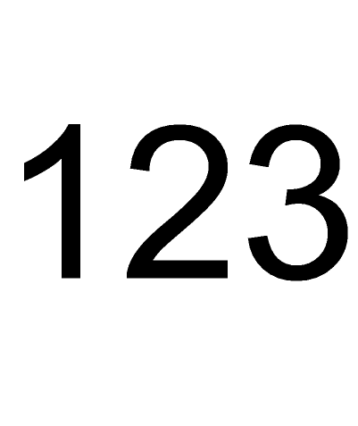

| Source image | Reference image |
|---|---|
 |
Unicode (UTF16) APS id Linking Test — This test is passed if the result of activating the link on "456" looks like the reference image.
It tests Unicode UTF16 (Japanese) characters in String Fixed (SF) data, specifically in screentip, apsid, and a fragment in a 'linkuri' pointing at that apsid.
The file does not contain non-Latin characters in any graphical text. I.e., it is not required to graphically render any Japanese characters to pass this test. It is only required to correctly handle them in the linking bits. In the metafile the Japanese graphical characters are stroked (filled polybezier).